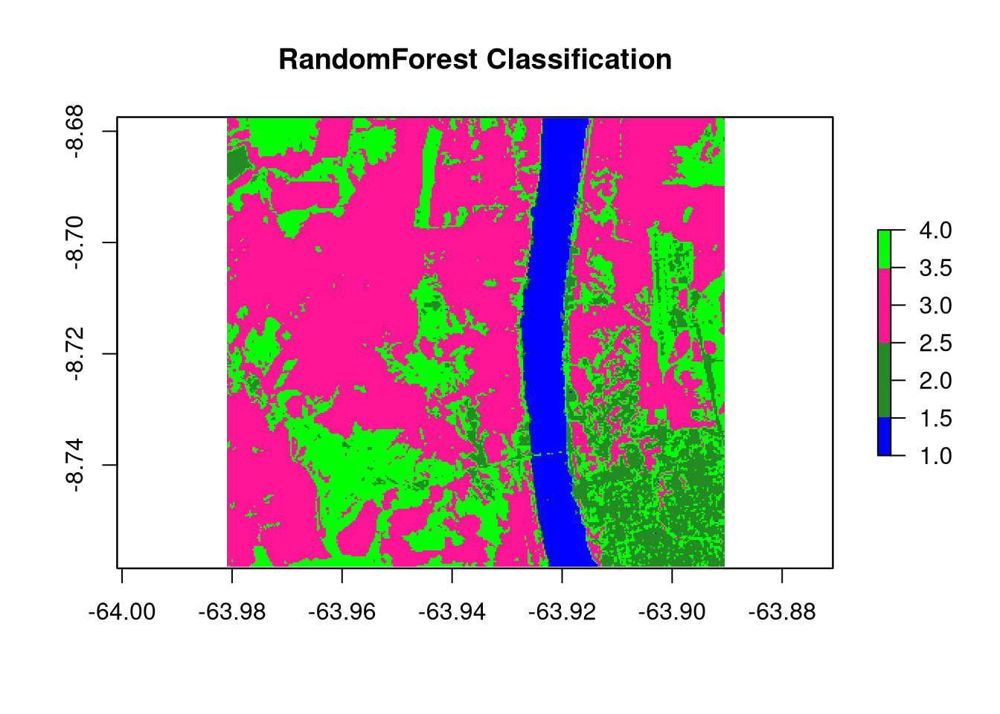
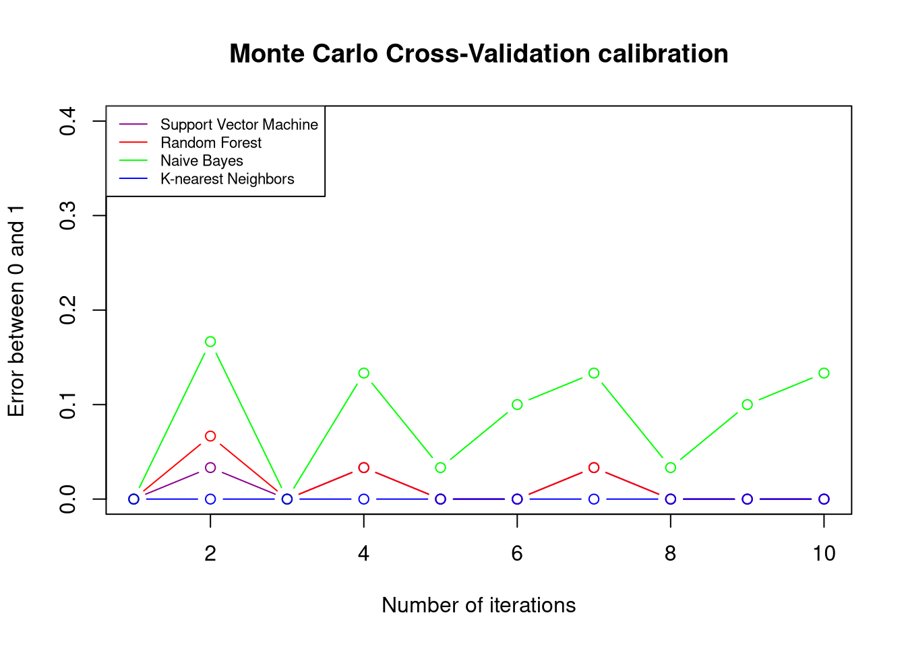

Monte Carlo Simulation Tools for REDD+ Uncertainty Estimates
1 Introduction
The ART-TREES Standard V2.01 mandates precise methodologies for calculating and reporting uncertainty estimates associated with emission factors and activity data within jurisdictional and nested REDD+ projects. In response to these requirements, the LEAF-TA program has commissioned the Guyana ART-TREES project team to develop and support capacity building in specific technical areas.
- Develop Monte Carlo simulation pathways to quantify uncertainty in emission factors and activity data, ensuring consistency with ART-TREES’s emphasis on robust uncertainty analysis and corrective bias assessment.
- Use R or other software to create systems that streamline data workflows and enhance accessibility for MRV purposes. Monte Carlo Simulation for Uncertainty Estimation
- Document methodologies and provide results in formats compliant with ART-TREES reporting standards.
- Prepare technical reports that detail uncertainty estimation methods and database management workflows.
- Develop and deliver training materials to strengthen stakeholder capacity to use ART-TREES-aligned tools and methodologies.
1.1 ART Requirements for Monte Carlo Methods
To reduce risk of over-crediting, the TREES 2.0 Standard (August 2021)1 outlines requirements for reporting uncertainty in emissions and removals, and adjusting estimates where uncertainty levels exceed the defined threshold of a half-width of a 90% confidence interval between the upper and lower bounds (Relative RMSE ≤ 10%). Monte Carlo simulations are identified as an appropriate methodology due to their capacity to model variance and provide conservative estimates from large-scale higly-variable datasets. Specifically, “Monte Carlo simulations shall use the 90% confidence interval and a simulation n of 10,000” (p.45).
Aggregation of Uncertainty Across Crediting Periods
The TREES Standard provides a level of flexibility in allowing participants to aggregate uncertainty deductions across multiple crediting periods. At the end of each crediting period, participants may calculate a consolidated uncertainty deduction based on the summed gross emissions reductions and removals achieved over their entire ART participation. If prior uncertainty deductions exceeded the aggregated deduction sum for the total period, the over-deducted credits will be issued into the participant’s registry account. This approach aims to incentivize participants to refine data quality and uncertainty estimates.
Exemption for Allometric Estimates
An exemption from requirements for Monte Carlo simulations is granted to allometric modeled estimates. The TREES Standards V2.0 states that “such errors are considered consistent between emissions in the crediting level and crediting periods” which therefore do not materially influence the net results.
Inclusion of Biomass Map Uncertainty
Conversely, uncertainty must be assessed and reported for emissions factors derived from biomass maps, as these datasets directly impact the accuracy of emission estimates. TREES participants are encouraged to adopt best practices, such as those outlined in the CEOS LPV Biomass Protocol 2021, to enhance calibration, validation, and reliability of spatially explicit datasets. In this guidance document, key recommendations for good practices include appropriate scaling, temporally & spatially consistent reference data and remote sensing, and the use of approved error metrics (90% CI or RMSE). In particular, three likely sources of uncertainty in biomass estimation are highlighted separately for consideration in assessing and calibrating predictions2.
- Measurement Uncertainty in tree measurements (i.e DBH and height).
- Allometric Model Errors in statistically inferring biomass from from tree measurements
- Sampling & Spatial Uncertainty arising from autocorrelation & over-fitting
Calculating Uncertainty Deductions
Cited on page 46 of the TREES Standards V2.0, calculations of uncertainty deductions are derived using the following formulae:
\[ UNC_t = (GHG ER_t + GHG REMV_t) \times UA_t \text{. EQ 10} \]
| \(UNC_t\) | Uncertainty deduction for year \(t\) (\(tCO_2e\)) |
| \(GHG ER_t\) | Gross greenhouse gas emissions reductions for year \(t\) (\(tCO_2e\)) |
| \(GHG REMV_t\) | Gross greenhouse gas removals for year \(t\) (\(tCO_2e\)) |
| \(UA_t\) | The uncertainty adjustment factor for year \(t\) |
The uncertainty adjustment factor (\(UAdj_t\)) quantifies the proportional adjustment to emissions reductions and removals based on statistical uncertainty. It is defined as:
\[ UAdj_t = 0.524417 \times \frac{HW_{90\%t}}{1.645006} \text{. EQ 11} \]
| \(90\%\text{ C I}_{t}\) | The half-width of 90% confidence interval as percentage of mean |
| \(1.645006\) | \(t\) value for a 90% confidence interval |
| \(0.524417\) | A scaling constant to adjust the proportion. |
1.2 Current Methods
In Appendix I, annotated results are presented from a rapid literature review of current methodologies and discussions of Monte Carlo simulations of biomass estimations used in REDD+ studies and programs. The search was conducted using keywords including “Monte Carlo simulations,” “biomass estimation,” “carbon stock uncertainty,” and “REDD+ projects”. Variants and combinations of these terms, including “forest carbon accounting” and “allometric uncertainty,” were also explored. Data sources were visited among Scopus, Web of Science, and Google Scholar,and specialized journals in forestry, remote sensing, and carbon management. The temporal window of the review focused on studies published in the last two decades (2003–2023), reflecting the period during which Monte Carlo methods gained prominence in forest biomass estimation and REDD+ research evolved into a critical global framework. Additional attention was given to high-impact reviews and meta-analyses that provide state-of-the-art evaluations of the field.
Summarize review here…
1.2.1 Current tools
1.2.2 Current limitations
1.3 Demonstration script
1.3.1 Environment setup
easypackages::packages(
"animation", "BIOMASS", "caret", "dataMaid", "DescTools", "dplyr",
"extrafont", "FawR", "ForestToolsRS", "ggplot2", "htmltools",
"janitor", "jsonlite", "lattice", "kableExtra", "kernlab",
"knitr", "Mlmetrics", "olsrr", "plotly", "psych", "RColorBrewer",
"rmarkdown", "readxl", "solarizeddox", "tibble", "tidymodels", "tidyverse",
"tinytex", "tune", "useful", "webshot", "webshot2",
prompt = F
)1.4 Import data
This section outlines the tools for importing and preparing forestry and biomass data for analysis, a key step in building ART-TREES-compliant MRV systems. Using the allodb package, we load a global allometry database and a dummy dataset from the Smithsonian Institute ForestGEO project.
library("allodb") # https://docs.ropensci.org/allodb/
set.seed(333)
#data(ufc) # spuRs::vol.m3(dataset$dbh.cm, dataset$height.m, multiplier = 0.5)
data(scbi_stem1)
dataset = scbi_stem1
head(dataset) |> tibble::as_tibble()| treeID | stemID | dbh | genus | species | Family |
|---|---|---|---|---|---|
| 2695 | 2695 | 1.41 | Acer | negundo | Sapindaceae |
| 1229 | 38557 | 1.67 | Acer | negundo | Sapindaceae |
| 1230 | 1230 | 1.42 | Acer | negundo | Sapindaceae |
| 1295 | 32303 | 1.04 | Acer | negundo | Sapindaceae |
| 1229 | 32273 | 2.47 | Acer | negundo | Sapindaceae |
| 66 | 31258 | 2.19 | Acer | negundo | Sapindaceae |
psych::describe(dataset)| vars | n | mean | sd | median | trimmed | mad | min | max | range | skew | kurtosis | se | |
|---|---|---|---|---|---|---|---|---|---|---|---|---|---|
| treeID | 1 | 2287 | 2778.658067 | 1929.262548 | 2525.00 | 2705.540688 | 2091.9486000 | 1 | 6207.00 | 6206.00 | 0.2717859 | -1.1051173 | 40.3420768 |
| stemID | 2 | 2287 | 16577.120682 | 16197.884045 | 5022.00 | 15661.273621 | 5749.5228000 | 1 | 40180.00 | 40179.00 | 0.3961204 | -1.7487292 | 338.7078042 |
| dbh | 3 | 2287 | 5.520162 | 10.803608 | 1.67 | 2.653741 | 0.7857782 | 1 | 92.02 | 91.02 | 3.8111843 | 16.3042875 | 0.2259101 |
| genus* | 4 | 2287 | 16.372540 | 6.516571 | 18.00 | 16.712725 | 0.0000000 | 1 | 31.00 | 30.00 | -0.5713109 | 0.1413179 | 0.1362655 |
| species* | 5 | 2287 | 13.256231 | 9.600139 | 8.00 | 11.305298 | 0.0000000 | 1 | 40.00 | 39.00 | 1.5869799 | 1.2976632 | 0.2007449 |
| Family* | 6 | 2287 | 13.068212 | 4.021778 | 13.00 | 13.334244 | 0.0000000 | 1 | 22.00 | 21.00 | -0.5763674 | 1.4407792 | 0.0840979 |
str(dataset)tibble [2,287 × 6] (S3: tbl_df/tbl/data.frame)
$ treeID : int [1:2287] 2695 1229 1230 1295 1229 66 2600 4936 1229 1005 ...
$ stemID : int [1:2287] 2695 38557 1230 32303 32273 31258 2600 4936 36996 1005 ...
$ dbh : num [1:2287] 1.41 1.67 1.42 1.04 2.47 ...
$ genus : chr [1:2287] "Acer" "Acer" "Acer" "Acer" ...
$ species: chr [1:2287] "negundo" "negundo" "negundo" "negundo" ...
$ Family : chr [1:2287] "Sapindaceae" "Sapindaceae" "Sapindaceae" "Sapindaceae" ...Tables 1-3: Smithsonian Institute GEOForest dataset from allodb package (n = 2287)
1.5 Probability density functions
Accurate selection of probability density functions (PDFs) is essential for modeling uncertainties in carbon stocks and activity data. This section describes methodologies for fitting PDFs to data, ensuring results are robust and aligned with ART-TREES best practices.
Use of statistical tests for goodness-of-fit validation.
Integration of domain expertise to refine parameter selection.
# add allometry database
data(equations)
data("equations_metadata")
show_cols = c("equation_id", "equation_taxa", "equation_allometry")
eq_tab_acer = new_equations(subset_taxa = "Acer")
head(eq_tab_acer[, show_cols])| equation_id | equation_taxa | equation_allometry |
|---|---|---|
| a4e4d1 | Acer saccharum | exp(-2.192-0.011dbh+2.67(log(dbh))) |
| dfc2c7 | Acer rubrum | 2.02338*(dbh2)1.27612 |
| eac63e | Acer rubrum | 5.2879*(dbh2)1.07581 |
| f49bcb | Acer pseudoplatanus | exp(-5.644074+(2.5189(log(pidbh)))) |
| 14bf3d | Acer mandshuricum | 0.0335*(dbh)1.606+0.0026(dbh)^3.323+0.1222(dbh)2.310 |
| 0c7cd6 | Acer mono | 0.0202*(dbh)1.810+0.0111(dbh)^2.740+0.1156(dbh)2.336 |
# Compute above ground biomass
dataset$agb = allodb::get_biomass(
dbh = dataset$dbh,
genus = dataset$genus,
species = dataset$species,
coords = c(-78.2, 38.9)
)
# examine dbh ~ agb function
dbh_agb = lm(dbh ~ agb, data = dataset)
#olsrr::ols_test_breusch_pagan(lm(dbh_agb)) #<0.0000
#h = lattice::histogram(dbh ~ agb, data = dataset)
plot(
x = dataset$dbh,
y = dataset$agb,
col = factor(scbi_stem1$genus),
xlab = "DBH (cm)",
ylab = "AGB (kg)"
)
# examine univariate distributions
h1 = hist(dataset$dbh, breaks=10, col="red")
xfit<-seq(min(dataset$dbh),max(dataset$dbh),length=40)
yfit<-dnorm(xfit,mean=mean(dataset$dbh),sd=sd(dataset$dbh))
yfit <- yfit*diff(h1$mids[1:2])*length(dataset$dbh)
lines(xfit, yfit, col="blue", lwd=2)
h2 = hist(dataset$agb, breaks=10, col="red")
xfit<-seq(min(dataset$agb),max(dataset$agb),length=40)
yfit<-dnorm(xfit,mean=mean(dataset$agb),sd=sd(dataset$agb))
yfit <- yfit*diff(h2$mids[1:2])*length(dataset$agb)
lines(xfit, yfit, col="blue", lwd=2)
wilcox.test(dataset$dbh) # p<0.00001
Wilcoxon signed rank test with continuity correction
data: dataset$dbh
V = 2616328, p-value < 2.2e-16
alternative hypothesis: true location is not equal to 0wilcox.test(dataset$agb) # p<0.00001
Wilcoxon signed rank test with continuity correction
data: dataset$agb
V = 2616328, p-value < 2.2e-16
alternative hypothesis: true location is not equal to 0


1.6 Simulation Regime
This section introduces the design of the Monte Carlo simulation regime, including:
Simulation parameters are defined to balance computational efficiency and statistical robustness.
Cross-validation techniques are employed to evaluate model performance and identify bias or variance.
The LGOCV acronym used in the caret package functions below stands for “leave one group out cross validation”. We must select the % of test data that is set out from the build upon which the model will be repeatedly trained. Note, the following code applies functions to full dataset without explicit training-test split. Questions remains on whether we require cross-validation uncertainty estimate to review internal bias, and whether we would like to develop Monte Carlo tools for spatial uncertainty used in Activity Data analysis. For your consideration, the consultant has previously developed Monte Carlo tools for LULC applications, saved here
# Cross-validation split for bias detection
#samples = caret::createDataPartition(dataset_tidy$volume, p = 0.80, list = FALSE)
#train_data = dataset_tidy[samples, ]
#test_data = dataset_tidy[-samples, ]
# Simulation pattern & regime
monte_carlo = trainControl(
method = "LGOCV",
number = 10, # number of simulations
p = 0.8) # percentage resampled
# Training model fit with all covariates (".") & the simulation
lm_monte_carlo = train(
data = dataset,
agb ~ .,
na.action = na.omit,
trControl = monte_carlo)
lm_monte_carlo Random Forest
2287 samples
6 predictor
No pre-processing
Resampling: Repeated Train/Test Splits Estimated (10 reps, 80%)
Summary of sample sizes: 1832, 1832, 1832, 1832, 1832, 1832, ...
Resampling results across tuning parameters:
mtry RMSE Rsquared MAE
2 334.91964 0.5977225 114.373822
47 83.37237 0.9711580 14.009351
93 49.98649 0.9895214 8.593528
RMSE was used to select the optimal model using the smallest value.
The final value used for the model was mtry = 93.1.7 Plot residuals
To enable access to these predictions, we need to instruct caret to retain the resampled predictions by setting savePredictions = "final" in our trainControl() function. It’s important to be aware that if you’re working with a large dataset or numerous resampling iterations, the resulting train() object may grow significantly in size. This happens because caret must store a record of every row, including both the observed values and predictions, for each resampling iteration. By visualizing the results, we can offer insights into the performance of our model on the resampled data.
monte_carlo_viz = trainControl(
method = "LGOCV",
p = 0.8,
number = 1, # just for saving previous results
savePredictions = "final")
lm_monte_carlo_viz = train(
agb ~ .,
data = dataset,
method = "lm",
na.action = na.omit,
trControl = monte_carlo_viz)
head(lm_monte_carlo_viz$pred) # residuals | intercept | pred | obs | rowIndex | Resample |
|---|---|---|---|---|
| TRUE | -39.259595 | 0.2822055 | 2 | Resample1 |
| TRUE | -8.616432 | 0.7664882 | 5 | Resample1 |
| TRUE | -31.913620 | 0.5637806 | 6 | Resample1 |
| TRUE | -97.233363 | 0.1832042 | 10 | Resample1 |
| TRUE | 356.407185 | 161.5561844 | 20 | Resample1 |
| TRUE | 1393.945330 | 1095.2695394 | 22 | Resample1 |
lm_monte_carlo_viz$pred |>
ggplot(aes(x=pred,y=obs)) +
geom_point(shape=1) +
geom_abline(slope=1, colour='blue') +
coord_obs_pred()
1.8 Uncertainty Estimates
This section discusses the trade-offs and methodological choices in uncertainty estimation using Monte Carlo simulations. It aligns with ART-TREES principles by:
Quantifying confidence intervals for emissions estimates.
Addressing potential biases in the modeling process.
Ensuring robustness in uncertainty reporting.
Working Notes…
References to key studies on cross-validation methods provide a theoretical foundation for the approach.Monte Carlo cross-validation (MCCV) involves randomly dividing the dataset into two parts: a training subset and a validation subset, without reusing data points. The model is trained on the training subset, denoted as ( n_t ), and assessed on the validation subset, ( n_v ). While there are ( ) distinct ways to form the training subsets, MCCV bypasses the computational burden of evaluating all these combinations by sampling a smaller number of iterations. Zhang \[3\] demonstrated that performing MCCV for ( N ) iterations yields results comparable to exhaustive cross-validation over all possible subsets. However, studies investigating MCCV for large dataset sizes (( N )) remain limited.
The trade-off between bias and variance in MCCV is influenced by the choice of ( k ) (iterations) and ( n_t ) (training subset size). Increasing ( k ) or ( n_t ) tends to reduce bias but increases variance. Larger training subsets lead to greater similarity across iterations, which can result in overfitting to the training data. For a deeper analysis, see \[2\]. The bias-variance characteristics of ( k )-fold cross-validation (kFCV) and MCCV differ, but their bias levels can be aligned by selecting appropriate values for ( k ) and ( n_t ). A detailed comparison of the bias and variance for both approaches can be found in \[1\], where MCCV is referred to as the “repeated-learning testing-model.”
Monte Carlo Simulation in LULC Classification of Activity Data Assessment:
library(ForesToolboxRS)
dir.create("./data/testdata")
download.file("https://github.com/ytarazona/ft_data/raw/main/data/LC08_232066_20190727_SR.zip",destfile = "testdata/LC08_232066_20190727_SR.zip")
unzip("testdata/LC08_232066_20190727_SR.zip", exdir = "testdata") download.file("https://github.com/ytarazona/ft_data/raw/main/data/signatures.zip", destfile = "testdata/signatures.zip")
unzip("testdata/signatures.zip", exdir = "testdata")
image <- stack("./data/testdata/LC08_232066_20190727_SR.tif")
sig <- read_sf("./data/testdata/signatures.shp")
classRF <- mla(img = image, model = "randomForest", endm = sig, training_split = 80)
print(classRF)# Classification
colmap <- c("#0000FF","#228B22","#FF1493", "#00FF00")
plot(classRF$Classification, main = "RandomForest Classification", col = colmap, axes = TRUE)

plot(
cal_ml$svm_mccv,
main = "Monte Carlo Cross-Validation calibration",
col = "darkmagenta",
type = "b",
ylim = c(0, 0.4),
ylab = "Error between 0 and 1",
xlab = "Number of iterations"
)
lines(cal_ml$randomForest_mccv, col = "red", type = "b")
lines(cal_ml$naiveBayes_mccv, col = "green", type = "b")
lines(cal_ml$knn_mccv, col = "blue", type = "b")
legend(
"topleft",
c(
"Support Vector Machine",
"Random Forest",
"Naive Bayes",
"K-nearest Neighbors"
),
col = c("darkmagenta", "red", "green", "blue"),
lty = 1,
cex = 0.7
)
Burman, P. (1989). A comparative study of ordinary cross-validation, ( v )-fold cross-validation, and the repeated learning testing-model methods. Biometrika, 76, 503–514.
Hastie, T., Tibshirani, R., & Friedman, J. (2011). The Elements of Statistical Learning: Data Mining, Inference, and Prediction. 2nd ed. New York: Springer.
Zhang, P. (1993). Model selection via multifold cross-validation. Annals of Statistics, 21, 299–313.
1.9 Runtime snapshot
devtools::session_info()─ Session info ───────────────────────────────────────────────────────────────
setting value
version R version 4.4.2 (2024-10-31)
os Fedora Linux 40 (Workstation Edition)
system x86_64, linux-gnu
ui X11
language (EN)
collate en_CA.UTF-8
ctype en_CA.UTF-8
tz America/Vancouver
date 2024-12-20
pandoc 3.1.3 @ /usr/libexec/rstudio/bin/pandoc/ (via rmarkdown)
─ Packages ───────────────────────────────────────────────────────────────────
package * version date (UTC) lib source
abind 1.4-8 2024-09-12 [2] CRAN (R 4.4.1)
allodb * 0.0.1.9000 2024-12-19 [1] Github (ropensci/allodb@4207f86)
animation * 2.7 2021-10-07 [2] CRAN (R 4.4.0)
assertthat 0.2.1 2019-03-21 [2] CRAN (R 4.4.0)
backports 1.5.0 2024-05-23 [2] CRAN (R 4.4.0)
BIOMASS * 2.1.11 2023-09-29 [2] CRAN (R 4.4.0)
boot 1.3-31 2024-08-28 [2] CRAN (R 4.4.1)
broom * 1.0.7 2024-09-26 [2] CRAN (R 4.4.1)
cachem 1.1.0 2024-05-16 [2] CRAN (R 4.4.0)
car 3.1-3 2024-09-27 [2] CRAN (R 4.4.1)
carData 3.0-5 2022-01-06 [2] CRAN (R 4.4.0)
caret * 7.0-1 2024-12-10 [2] CRAN (R 4.4.2)
cellranger 1.1.0 2016-07-27 [2] CRAN (R 4.4.0)
chromote 0.3.1 2024-08-30 [2] CRAN (R 4.4.1)
class 7.3-22 2023-05-03 [2] CRAN (R 4.4.0)
classInt 0.4-10 2023-09-05 [2] CRAN (R 4.4.0)
cli 3.6.3 2024-06-21 [2] CRAN (R 4.4.0)
codetools 0.2-20 2024-03-31 [2] CRAN (R 4.4.0)
colorspace 2.1-1 2024-07-26 [2] CRAN (R 4.4.1)
CoprManager 0.5.7 2024-10-31 [4] local
data.table 1.16.4 2024-12-06 [2] CRAN (R 4.4.2)
dataMaid * 1.4.1 2021-10-08 [2] CRAN (R 4.4.1)
DBI 1.2.3 2024-06-02 [2] CRAN (R 4.4.0)
DEoptimR 1.1-3-1 2024-11-23 [2] CRAN (R 4.4.2)
DescTools * 0.99.58 2024-11-08 [2] CRAN (R 4.4.1)
devtools 2.4.5 2022-10-11 [2] CRAN (R 4.4.0)
dials * 1.3.0 2024-07-30 [2] CRAN (R 4.4.1)
DiceDesign 1.10 2023-12-07 [2] CRAN (R 4.4.0)
digest 0.6.37 2024-08-19 [2] CRAN (R 4.4.1)
dplyr * 1.1.4 2023-11-17 [2] CRAN (R 4.4.0)
e1071 1.7-16 2024-09-16 [2] CRAN (R 4.4.1)
easypackages 0.1.0 2016-12-05 [2] CRAN (R 4.4.0)
ellipsis 0.3.2 2021-04-29 [2] CRAN (R 4.4.0)
evaluate 1.0.1 2024-10-10 [2] CRAN (R 4.4.1)
Exact 3.3 2024-07-21 [2] CRAN (R 4.4.1)
expm 1.0-0 2024-08-19 [2] CRAN (R 4.4.1)
extrafont * 0.19 2023-01-18 [2] CRAN (R 4.4.0)
extrafontdb 1.0 2012-06-11 [2] CRAN (R 4.4.0)
farver 2.1.2 2024-05-13 [2] CRAN (R 4.4.0)
fastmap 1.2.0 2024-05-15 [2] CRAN (R 4.4.0)
forcats * 1.0.0 2023-01-29 [2] CRAN (R 4.4.0)
foreach 1.5.2 2022-02-02 [2] CRAN (R 4.4.0)
Formula 1.2-5 2023-02-24 [2] CRAN (R 4.4.0)
fs 1.6.5 2024-10-30 [2] CRAN (R 4.4.1)
furrr 0.3.1 2022-08-15 [2] CRAN (R 4.4.0)
future 1.34.0 2024-07-29 [2] CRAN (R 4.4.1)
future.apply 1.11.3 2024-10-27 [2] CRAN (R 4.4.1)
generics 0.1.3 2022-07-05 [2] CRAN (R 4.4.0)
ggplot2 * 3.5.1 2024-04-23 [2] CRAN (R 4.4.0)
gld 2.6.6 2022-10-23 [2] CRAN (R 4.4.0)
globals 0.16.3 2024-03-08 [2] CRAN (R 4.4.0)
glue 1.8.0 2024-09-30 [2] CRAN (R 4.4.1)
goftest 1.2-3 2021-10-07 [2] CRAN (R 4.4.0)
gower 1.0.2 2024-12-17 [2] CRAN (R 4.4.2)
GPfit 1.0-8 2019-02-08 [2] CRAN (R 4.4.0)
gridExtra 2.3 2017-09-09 [2] CRAN (R 4.4.0)
gtable 0.3.6 2024-10-25 [2] CRAN (R 4.4.1)
hardhat 1.4.0 2024-06-02 [2] CRAN (R 4.4.0)
haven 2.5.4 2023-11-30 [2] CRAN (R 4.4.0)
hms 1.1.3 2023-03-21 [2] CRAN (R 4.4.0)
htmltools * 0.5.8.1 2024-04-04 [2] CRAN (R 4.4.0)
htmlwidgets 1.6.4 2023-12-06 [2] CRAN (R 4.4.0)
httpuv 1.6.15 2024-03-26 [2] CRAN (R 4.4.0)
httr 1.4.7 2023-08-15 [2] CRAN (R 4.4.0)
infer * 1.0.7 2024-03-25 [2] CRAN (R 4.4.0)
ipred 0.9-15 2024-07-18 [2] CRAN (R 4.4.1)
iterators 1.0.14 2022-02-05 [2] CRAN (R 4.4.0)
janitor * 2.2.0 2023-02-02 [2] CRAN (R 4.4.0)
jsonlite * 1.8.9 2024-09-20 [2] CRAN (R 4.4.1)
kableExtra * 1.4.0 2024-01-24 [2] CRAN (R 4.4.0)
kernlab * 0.9-33 2024-08-13 [2] CRAN (R 4.4.1)
KernSmooth 2.23-24 2024-05-17 [2] CRAN (R 4.4.0)
knitr * 1.49 2024-11-08 [2] CRAN (R 4.4.1)
labeling 0.4.3 2023-08-29 [2] CRAN (R 4.4.0)
later 1.4.1 2024-11-27 [2] CRAN (R 4.4.2)
lattice * 0.22-6 2024-03-20 [2] CRAN (R 4.4.0)
lava 1.8.0 2024-03-05 [2] CRAN (R 4.4.0)
lazyeval 0.2.2 2019-03-15 [2] CRAN (R 4.4.0)
lhs 1.2.0 2024-06-30 [2] CRAN (R 4.4.1)
lifecycle 1.0.4 2023-11-07 [2] CRAN (R 4.4.0)
listenv 0.9.1 2024-01-29 [2] CRAN (R 4.4.0)
lmom 3.2 2024-09-30 [2] CRAN (R 4.4.1)
lubridate * 1.9.4 2024-12-08 [2] CRAN (R 4.4.2)
magrittr 2.0.3 2022-03-30 [2] CRAN (R 4.4.0)
MASS 7.3-61 2024-06-13 [2] CRAN (R 4.4.0)
Matrix 1.7-1 2024-10-18 [2] CRAN (R 4.4.1)
memoise 2.0.1 2021-11-26 [2] CRAN (R 4.4.0)
mime 0.12 2021-09-28 [2] CRAN (R 4.4.0)
miniUI 0.1.1.1 2018-05-18 [2] CRAN (R 4.4.0)
minpack.lm 1.2-4 2023-09-11 [2] CRAN (R 4.4.0)
mnormt 2.1.1 2022-09-26 [2] CRAN (R 4.4.0)
modeldata * 1.4.0 2024-06-19 [2] CRAN (R 4.4.0)
ModelMetrics 1.2.2.2 2020-03-17 [2] CRAN (R 4.4.0)
munsell 0.5.1 2024-04-01 [2] CRAN (R 4.4.0)
mvtnorm 1.3-2 2024-11-04 [2] CRAN (R 4.4.1)
nlme 3.1-166 2024-08-14 [2] CRAN (R 4.4.1)
nnet 7.3-19 2023-05-03 [2] CRAN (R 4.4.0)
nortest 1.0-4 2015-07-30 [2] CRAN (R 4.4.0)
olsrr * 0.6.1 2024-11-06 [2] CRAN (R 4.4.1)
pander 0.6.5 2022-03-18 [2] CRAN (R 4.4.0)
parallelly 1.41.0 2024-12-18 [2] CRAN (R 4.4.2)
parsnip * 1.2.1 2024-03-22 [2] CRAN (R 4.4.0)
pillar 1.10.0 2024-12-17 [2] CRAN (R 4.4.2)
pkgbuild 1.4.5 2024-10-28 [2] CRAN (R 4.4.1)
pkgconfig 2.0.3 2019-09-22 [2] CRAN (R 4.4.0)
pkgload 1.4.0 2024-06-28 [2] CRAN (R 4.4.1)
plotly * 4.10.4 2024-01-13 [2] CRAN (R 4.4.0)
plyr 1.8.9 2023-10-02 [2] CRAN (R 4.4.0)
pROC 1.18.5 2023-11-01 [2] CRAN (R 4.4.0)
processx 3.8.4 2024-03-16 [2] CRAN (R 4.4.0)
prodlim 2024.06.25 2024-06-24 [2] CRAN (R 4.4.0)
profvis 0.4.0 2024-09-20 [2] CRAN (R 4.4.1)
promises 1.3.2 2024-11-28 [2] CRAN (R 4.4.2)
proxy 0.4-27 2022-06-09 [2] CRAN (R 4.4.0)
ps 1.8.1 2024-10-28 [2] CRAN (R 4.4.1)
psych * 2.4.6.26 2024-06-27 [2] CRAN (R 4.4.1)
purrr * 1.0.2 2023-08-10 [2] CRAN (R 4.4.0)
R6 2.5.1 2021-08-19 [2] CRAN (R 4.4.0)
randomForest 4.7-1.2 2024-09-22 [2] CRAN (R 4.4.1)
rappdirs 0.3.3 2021-01-31 [2] CRAN (R 4.4.1)
RColorBrewer * 1.1-3 2022-04-03 [2] CRAN (R 4.4.0)
Rcpp 1.0.13-1 2024-11-02 [2] CRAN (R 4.4.1)
readr * 2.1.5 2024-01-10 [2] CRAN (R 4.4.0)
readxl * 1.4.3 2023-07-06 [2] CRAN (R 4.4.0)
recipes * 1.1.0 2024-07-04 [2] CRAN (R 4.4.1)
remotes 2.5.0 2024-03-17 [2] CRAN (R 4.4.0)
reshape2 1.4.4 2020-04-09 [2] CRAN (R 4.4.0)
rlang 1.1.4 2024-06-04 [2] CRAN (R 4.4.0)
rmarkdown * 2.29 2024-11-04 [1] CRAN (R 4.4.2)
robustbase 0.99-4-1 2024-09-27 [2] CRAN (R 4.4.1)
rootSolve 1.8.2.4 2023-09-21 [2] CRAN (R 4.4.0)
rpart 4.1.23 2023-12-05 [2] CRAN (R 4.4.0)
rsample * 1.2.1 2024-03-25 [2] CRAN (R 4.4.0)
rstudioapi 0.17.1 2024-10-22 [2] CRAN (R 4.4.1)
Rttf2pt1 1.3.12 2023-01-22 [2] CRAN (R 4.4.0)
scales * 1.3.0 2023-11-28 [2] CRAN (R 4.4.0)
sessioninfo 1.2.2 2021-12-06 [2] CRAN (R 4.4.0)
sf 1.0-19 2024-11-05 [2] CRAN (R 4.4.2)
shiny 1.10.0 2024-12-14 [2] CRAN (R 4.4.2)
snakecase 0.11.1 2023-08-27 [2] CRAN (R 4.4.0)
stringi 1.8.4 2024-05-06 [2] CRAN (R 4.4.0)
stringr * 1.5.1 2023-11-14 [2] CRAN (R 4.4.0)
survival 3.8-3 2024-12-17 [2] CRAN (R 4.4.2)
svglite 2.1.3 2023-12-08 [2] CRAN (R 4.4.0)
systemfonts 1.1.0 2024-05-15 [2] CRAN (R 4.4.0)
terra 1.8-5 2024-12-12 [2] CRAN (R 4.4.2)
tibble * 3.2.1 2023-03-20 [2] CRAN (R 4.4.0)
tidymodels * 1.2.0 2024-03-25 [2] CRAN (R 4.4.0)
tidyr * 1.3.1 2024-01-24 [2] CRAN (R 4.4.0)
tidyselect 1.2.1 2024-03-11 [2] CRAN (R 4.4.0)
tidyverse * 2.0.0 2023-02-22 [2] CRAN (R 4.4.0)
timechange 0.3.0 2024-01-18 [2] CRAN (R 4.4.1)
timeDate 4041.110 2024-09-22 [2] CRAN (R 4.4.1)
tinytex * 0.54 2024-11-01 [2] CRAN (R 4.4.1)
tune * 1.2.1 2024-04-18 [2] CRAN (R 4.4.0)
tzdb 0.4.0 2023-05-12 [2] CRAN (R 4.4.0)
units 0.8-5 2023-11-28 [2] CRAN (R 4.4.0)
urlchecker 1.0.1 2021-11-30 [2] CRAN (R 4.4.0)
useful * 1.2.6.1 2023-10-24 [2] CRAN (R 4.4.0)
usethis 3.1.0 2024-11-26 [2] CRAN (R 4.4.2)
vctrs 0.6.5 2023-12-01 [2] CRAN (R 4.4.0)
viridisLite 0.4.2 2023-05-02 [2] CRAN (R 4.4.0)
webshot * 0.5.5 2023-06-26 [2] CRAN (R 4.4.0)
webshot2 * 0.1.1 2023-08-11 [2] CRAN (R 4.4.0)
websocket 1.4.2 2024-07-22 [2] CRAN (R 4.4.1)
withr 3.0.2 2024-10-28 [2] CRAN (R 4.4.1)
workflows * 1.1.4 2024-02-19 [2] CRAN (R 4.4.0)
workflowsets * 1.1.0 2024-03-21 [2] CRAN (R 4.4.0)
xfun 0.49 2024-10-31 [2] CRAN (R 4.4.1)
xml2 1.3.6 2023-12-04 [2] CRAN (R 4.4.0)
xtable 1.8-4 2019-04-21 [2] CRAN (R 4.4.0)
yaml 2.3.10 2024-07-26 [2] CRAN (R 4.4.1)
yardstick * 1.3.1 2024-03-21 [2] CRAN (R 4.4.0)
[1] /home/seamus/R/x86_64-redhat-linux-gnu-library/4.4
[2] /usr/local/lib/R/library
[3] /usr/lib64/R/library
[4] /usr/share/R/library
──────────────────────────────────────────────────────────────────────────────Sys.getenv()CHROME_DESKTOP RStudio.desktop
CLICOLOR_FORCE 1
DBUS_SESSION_BUS_ADDRESS
unix:path=/run/user/1000/bus
DEBUGINFOD_IMA_CERT_PATH
/etc/keys/ima:
DEBUGINFOD_URLS https://debuginfod.fedoraproject.org/
DENO_DOM_PLUGIN /usr/libexec/quarto/bin/tools/x86_64/deno_dom/libplugin.so
DENO_NO_UPDATE_CHECK 1
DENO_TLS_CA_STORE system,mozilla
DESKTOP_SESSION gnome
DISPLAY :0
EARTHENGINE_ENV ./
EARTHENGINE_PYTHON ./bin/python3
EDITOR /usr/bin/nano
GDK_BACKEND x11
GDM_LANG en_CA.UTF-8
GDMSESSION gnome
GIO_LAUNCHED_DESKTOP_FILE
/usr/share/applications/rstudio.desktop
GIO_LAUNCHED_DESKTOP_FILE_PID
11160
GIT_ASKPASS rpostback-askpass
GNOME_SETUP_DISPLAY :1
HISTCONTROL ignoredups
HISTSIZE 1000
HOME /home/seamus
HOSTNAME fedora
INVOCATION_ID 562eb973fc09416dae9f796e5532a7d5
JOURNAL_STREAM 9:114154
LANG en_CA.UTF-8
LD_LIBRARY_PATH /usr/lib64/R/lib:/usr/lib/jvm/jre/lib/server:/usr/lib64/R/lib:/usr/lib/jvm/jre/lib/server
LESSOPEN ||/usr/bin/lesspipe.sh %s
LN_S ln -s
LOGNAME seamus
MAIL /var/spool/mail/seamus
MAKE make
MANAGERPID 2018
MEMORY_PRESSURE_WATCH /sys/fs/cgroup/user.slice/user-1000.slice/user@1000.service/app.slice/dbus-:1.2-org.gnome.Nautilus@2.service/memory.pressure
MEMORY_PRESSURE_WRITE c29tZSAyMDAwMDAgMjAwMDAwMAA=
MOZ_GMP_PATH /usr/lib64/mozilla/plugins/gmp-gmpopenh264/system-installed
MPLENGINE tkAgg
NO_AT_BRIDGE 1
ORIGINAL_XDG_CURRENT_DESKTOP
GNOME
PAGER /usr/bin/less
PATH /home/seamus/.local/bin:/home/seamus/bin:/usr/local/bin:/usr/local/sbin:/usr/bin:/usr/sbin:/usr/libexec/quarto/bin:/usr/libexec/rstudio/bin/postback
PKGLOAD_PARENT_TEMPDIR
/tmp/RtmpWDvlwY
PWD /home/seamus/repos/monte-carlo-trees
PYTHONIOENCODING utf-8
QT_IM_MODULE ibus
QUARTO_BIN_PATH /usr/libexec/quarto/bin
QUARTO_CROSSREF_INDEX_PATH
/home/seamus/repos/monte-carlo-trees/.Rproj.user/4BF3B1F2/quarto-crossref/48715372
QUARTO_DENO /usr/libexec/quarto/bin/tools/x86_64/deno
QUARTO_DOCUMENT_PATH .
QUARTO_PROJECT_ROOT /home/seamus/repos/monte-carlo-trees
QUARTO_RENDER_TOKEN 13596b09-8c33-41fa-a5a5-63faa8928d55
QUARTO_ROOT /usr
QUARTO_SHARE_PATH /usr/libexec/quarto/share
R_ARCH
R_BROWSER /usr/bin/xdg-open
R_BZIPCMD /usr/bin/bzip2
R_CLI_HAS_HYPERLINK_IDE_HELP
true
R_CLI_HAS_HYPERLINK_IDE_RUN
true
R_CLI_HAS_HYPERLINK_IDE_VIGNETTE
true
R_DOC_DIR /usr/share/doc/R
R_GZIPCMD /usr/bin/gzip
R_HOME /usr/lib64/R
R_INCLUDE_DIR /usr/include/R
R_LIBS_SITE /usr/local/lib/R/site-library:/usr/local/lib/R/library:/usr/lib64/R/library:/usr/share/R/library
R_LIBS_USER /home/seamus/R/x86_64-redhat-linux-gnu-library/4.4
R_PAPERSIZE a4
R_PAPERSIZE_USER a4
R_PDFVIEWER /usr/bin/xdg-open
R_PLATFORM x86_64-redhat-linux-gnu
R_PRINTCMD
R_RD4PDF times,inconsolata,hyper
R_RUNTIME
R_SESSION_TMPDIR /tmp/RtmpWDvlwY
R_SHARE_DIR /usr/share/R
R_STRIP_SHARED_LIB strip --strip-unneeded
R_STRIP_STATIC_LIB strip --strip-debug
R_TEXI2DVICMD /usr/bin/texi2dvi
R_UNZIPCMD /usr/bin/unzip
R_ZIPCMD /usr/bin/zip
RETICULATE_MINICONDA_ENABLED
RMARKDOWN_MATHJAX_PATH
/usr/libexec/rstudio/resources/mathjax-27
RS_LOG_LEVEL WARN
RS_RPOSTBACK_PATH /usr/libexec/rstudio/bin/rpostback
RS_SHARED_SECRET be264275-5db5-405a-8d12-faee7fff9e7e
RSTUDIO 1
RSTUDIO_CHILD_PROCESS_PANE
job
RSTUDIO_CLI_HYPERLINKS
true
RSTUDIO_CONSOLE_COLOR 256
RSTUDIO_CONSOLE_WIDTH 99
RSTUDIO_DESKTOP_EXE /usr/libexec/rstudio/rstudio
RSTUDIO_PANDOC /usr/libexec/rstudio/bin/pandoc
RSTUDIO_PROGRAM_MODE desktop
RSTUDIO_SESSION_PID 12272
RSTUDIO_SESSION_PORT 21527
RSTUDIO_USER_IDENTITY seamus
SED /usr/bin/sed
SESSION_MANAGER local/unix:@/tmp/.ICE-unix/2215,unix/unix:/tmp/.ICE-unix/2215
SHELL /bin/bash
SHLVL 1
SSH_AUTH_SOCK /run/user/1000/keyring/ssh
SYSTEMD_EXEC_PID 9540
TAR /usr/bin/gtar
TERM xterm-256color
TZDIR /usr/share/zoneinfo
USER seamus
USERNAME seamus
WAYLAND_DISPLAY wayland-0
XAUTHORITY /run/user/1000/.mutter-Xwaylandauth.X2XWY2
XDG_CURRENT_DESKTOP GNOME
XDG_DATA_DIRS /home/seamus/.local/share/flatpak/exports/share:/var/lib/flatpak/exports/share:/usr/local/share/:/usr/share/
XDG_MENU_PREFIX gnome-
XDG_RUNTIME_DIR /run/user/1000
XDG_SESSION_CLASS user
XDG_SESSION_DESKTOP gnome
XDG_SESSION_TYPE wayland
XMODIFIERS @im=ibus
ZOTERO_API YLGf46K04lL7uCAcolJ6V62G.libPaths()[1] "/home/seamus/R/x86_64-redhat-linux-gnu-library/4.4"
[2] "/usr/local/lib/R/library"
[3] "/usr/lib64/R/library"
[4] "/usr/share/R/library" 1.9.1 Appendix I: Rapid literature review of Monte Carlo methods in REDD+
| Parameter | Description |
|---|---|
| Keywords | Monte Carlo simulations |
| Biomass estimation | |
| Carbon stock uncertainty | |
| REDD+ projects | |
| Forest carbon accounting | |
| Allometric uncertainty | |
| Data Sources | Scopus |
| Web of Science | |
| Google Scholar | |
| Grey Literature from REDD+ working groups (i.e. UNFCCC, IPCC) | |
| Temporal Window | 2003–2023 |
| Focus Areas | Applications of Monte Carlo simulations in biomass and carbon stock estimations. |
| Addressing uncertainty in input data (e.g., allometric equations, plot-level measurements). | |
| Integration of Monte Carlo methods in REDD+ policy frameworks and carbon accounting. | |
| Inclusion Criteria | Peer-reviewed articles and high-impact reviews |
| Case studies and empirical research involving REDD+ projects. | |
| Discussions of methodological advancements or critiques of Monte Carlo approaches. |
| REDD+ scheme1 | Monte Carlo applied | Region | Key Findings | Ref |
|---|---|---|---|---|
| ADD | Uncertainty of SAAB estimate | Rondônia, Brazil | Estimated ± 20% measurement error in SAAB using Monte Carlo simulations; emphasized large trees’ role in biomass. | 3 |
| ADD | AGB Uncertainty | Kenya, Mozambique | Assessed mixed-effects models in estimating mangrove biomass. | 4 |
| ADD | Blanket uncertainty propagation | Ghana | AGB prediction error >20%; addressed error propagation from trees to pixels in remote sensing. | 5 |
| ADD | Plot-based uncertainty | New Zealand | Cross-plot variance greatest magnitude of uncertainty | 6 |
| JNR | Multi-scale AGB uncertainty modeling | Minnesota, USA | Cross-scale tests showing effects of spatial resolution on AGB uncertainty. | 7 |
| NA | Allometric uncertainty modeling | Panama | Allometric models identified as largest source of biomass estimation error. | 8 |
| ADD | Sampling and allometric uncertainty | Tapajos Nat Forest, Brazil | Significance of allometric models on uncertainty of root biomass, 95% CI, 21 plots. | 9 |
| ADD | Uncertainty of volume estimates | Santa Catarina, Brazil | Negligible effects of residual uncertainty on large-area estimates | 10 |
| NA | Uncertainty metrics in model selection | Oregon, USA | Uncertainty estimates call for local validation or new local model development | 11 |
| ADD | AGB model uncertainty | French Guiana | AGB sub-model errors dominate uncertainty; height and wood-specific gravity errors are minor but can cause bias. | 12 |
| IFM | Emission factor uncertainty | Central Africa | Model selection is the largest error source (40%); weighting models reduces uncertainty in emission factors. | 13 |
| NA | Uncertainty in ecosystem nutrient estimate | New Hampshire, USA | Identified 8% uncertainty in nitrogen budgets, mainly from plot variability (6%) and allometric errors (5%). | 14 |